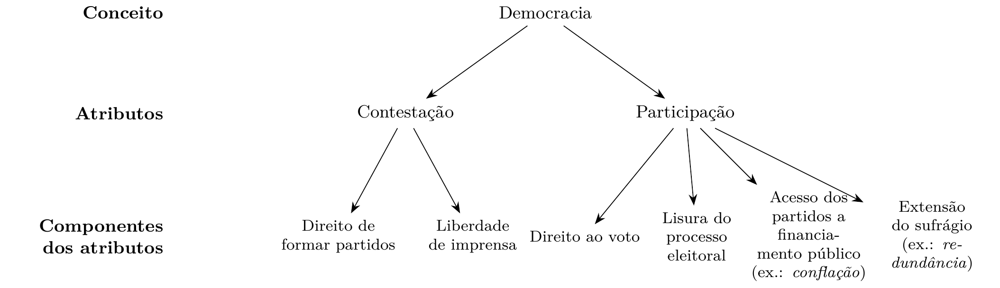
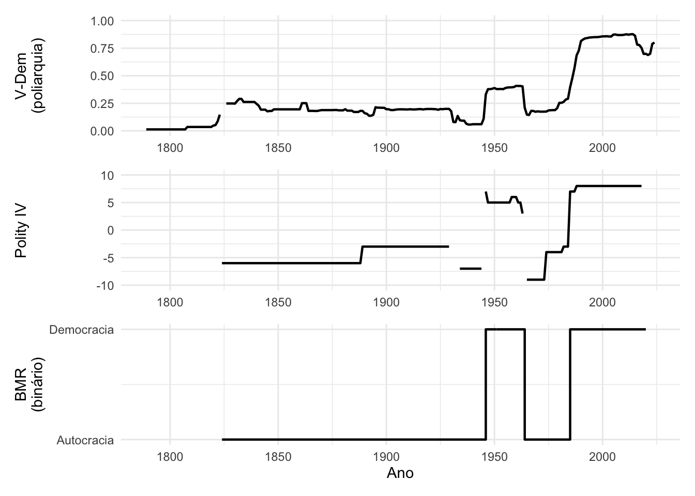
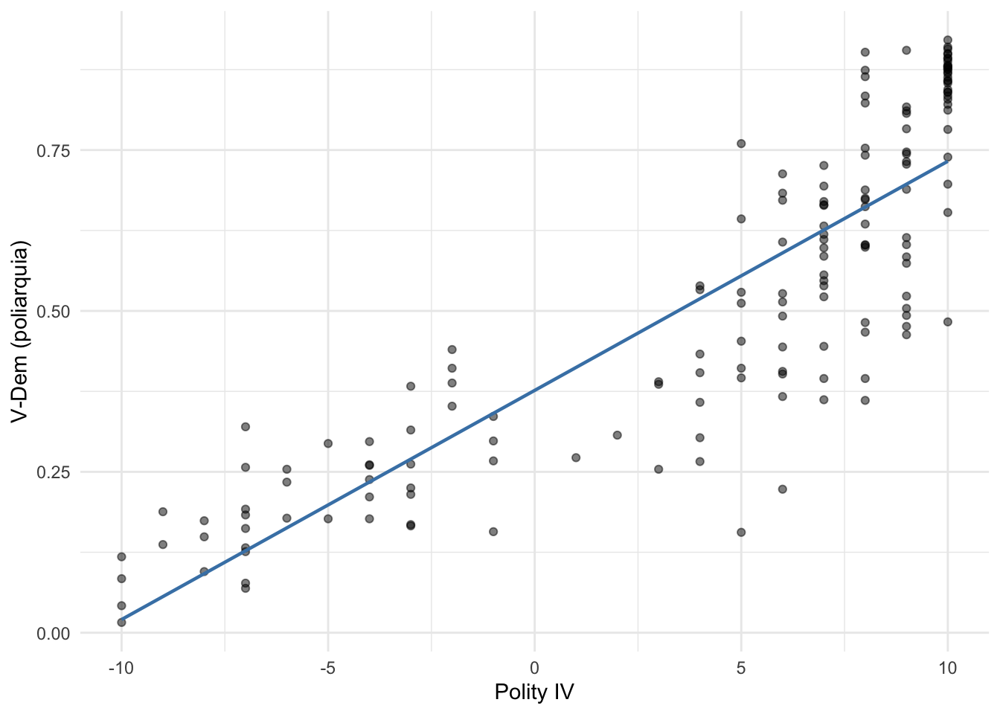
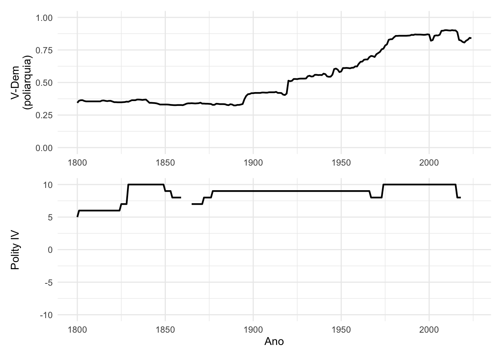
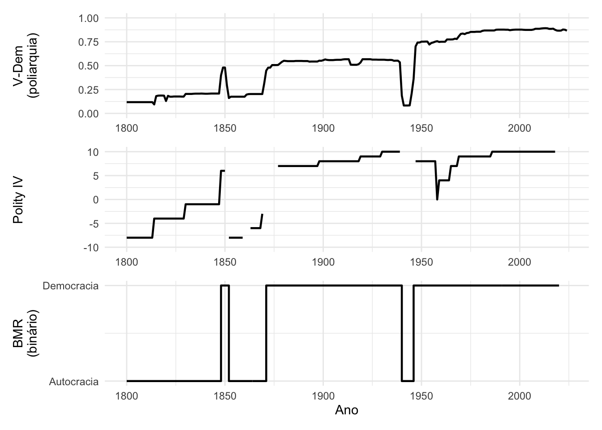
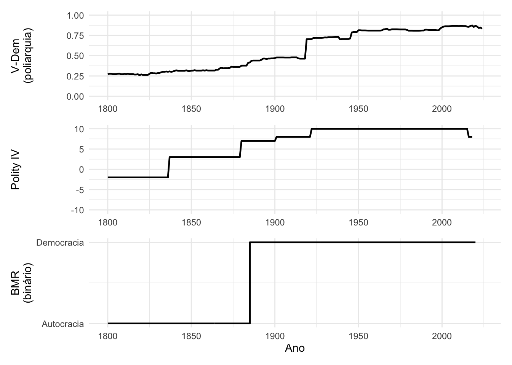

Capítulo 1 Introdução: O que é pesquisa quantitativa?
Objetivos do capítulo
- Entender a relação entre teorias, conceitos e mensuração
- Conhecer os tipos de variáveis (categóricas, ordinais, contínuas)
- Diferenciar frame teórico de perguntas empíricas
1.1 Teorias e hipóteses
Em Ciência Política, teorias tipicamente envolvem postulados sobre como agentes — pessoas, partidos, instituições, estados — se comportam. Um modelo de competição eleitoral, por exemplo, postula que candidatos buscam maximizar votos; uma teoria de relações internacionais postula que estados buscam segurança. Esses postulados comportamentais são o motor das teorias: deles derivam previsões empíricas testáveis. Toda teoria quantitativa em Ciência Política repousa sobre alguma premissa desse tipo, explícita ou implícita, e identificá-la é o primeiro passo para avaliar a teoria.
1.1.1 Frame teórico versus perguntas empíricas
O frame teórico é o conjunto de conceitos abstratos e relações postuladas (ex.: “competição política reduz corrupção”), enquanto a pergunta empírica traduz isso em algo testável com dados (ex.: “municípios com eleições mais competitivas apresentam menos irregularidades em licitações?”). A distinção é importante porque alunos frequentemente confundem “enquadramento teórico” com “pergunta de pesquisa”, ou acham que basta ter uma teoria para ter uma pergunta. Conceitos são do frame teórico; variáveis são da pergunta empírica.
1.2 Tipologias A
Collier, LaPorte & Seawright (2012) definem tipologias como “sistema organizado de tipos”. Exemplos clássicos de tiplogias: Weber: autoridade caristmática, tradicional e racional. Dahl: poliarquias, oligarquias comptitivas, hegemonias inclusivas e fechadas.
| Tipo de escala | Nível de informação | Estatísticas admissíveis | Definição de mensuração |
|---|---|---|---|
| Nominal | Igual/não igual | Contagem, moda, correlação de contingência | Atribuição de numerais segundo regras |
| Ordem parcial | Ordem entre algumas categorias, mas não todas | Contagem, moda, correlação de contingência | Atribuição de numerais segundo regras |
| Ordinal | Ordem entre todas as categorias | Mediana, percentis | Atribuição de numerais segundo regras |
| Intervalar | Intervalos iguais | Média, desvio-padrão, correlação e regressão | Mensuração como quantificação |
| Razão | Zero significativo | Média, desvio-padrão, correlação e regressão | Mensuração como quantificação |
| Absoluta | Contagem de entidades em uma categoria | Média, desvio-padrão, correlação, algumas formas de regressão | Mensuração como quantificação |
1.3 Variáveis
1.3.2 Operacionalização de conceitos
Conceitos abstratos (democracia, corrupção, polarização) precisam ser traduzidos em variáveis mensuráveis. Um mesmo conceito pode ter múltiplas operacionalizações, cada uma capturando uma faceta diferente, e a escolha de operacionalização afeta os resultados.
O exemplo clássico é “democracia”. Existem dezenas de índices, e eles nem sempre concordam. Considere três dos mais usados:
Polity IV/V: escala de -10 (autocracia plena) a +10 (democracia plena), baseada em características institucionais como competitividade e abertura do recrutamento do Executivo.
V-Dem (Varieties of Democracy): índice de poliarquia que varia de 0 a 1, construído a partir de centenas de indicadores codificados por especialistas de cada país.
Boix, Miller e Rosato (BMR): classificação binária (0 = autocracia, 1 = democracia), baseada em contestação e participação.
Podemos organizar essas formas de medir democracia utilizando um quadro lógico proposto por Munck e Verkuilen (2002):

Figure 1.1: Estrutura lógica de conceitos. Adaptado de Munck e Verkuilen (2002, p. 13).
A Figura 1.1 mostra a estrutura lógica dos conceitos segundo Munck e Verkuilen (2002). O conceito de “democracia” é decomposto em atributos (contestação e participação), que por sua vez se desdobram em componentes mensuráveis — as “folhas” da árvore conceitual. Dois problemas comuns aparecem nessa decomposição: conflação (quando um componente é atribuído ao atributo errado) e redundância (quando componentes no mesmo nível se sobrepõem).
Vamos visualizar como essas três medidas descrevem a trajetória política do Brasil.
library(vdemdata)
library(tidyverse)
brasil <- vdem |>
filter(country_name == "Brazil") |>
select(year, v2x_polyarchy, e_p_polity, e_boix_regime) |>
# Polity: remover códigos especiais (-66, -77, -88)
mutate(e_p_polity = ifelse(e_p_polity < -10, NA, e_p_polity))
p1 <- ggplot(brasil, aes(x = year, y = v2x_polyarchy)) +
geom_line(linewidth = 0.8) +
labs(y = "V-Dem\n(poliarquia)", x = NULL) +
scale_y_continuous(limits = c(0, 1)) +
theme_minimal()
p2 <- ggplot(brasil, aes(x = year, y = e_p_polity)) +
geom_line(linewidth = 0.8) +
labs(y = "Polity IV", x = NULL) +
scale_y_continuous(limits = c(-10, 10)) +
theme_minimal()
p3 <- ggplot(brasil, aes(x = year, y = e_boix_regime)) +
geom_step(linewidth = 0.8) +
labs(y = "BMR\n(binário)", x = "Ano") +
scale_y_continuous(breaks = c(0, 1), labels = c("Autocracia", "Democracia")) +
theme_minimal()
library(patchwork)
p1 / p2 / p3
Figure 1.2: Três operacionalizações de democracia para o Brasil (1900–2024). Painel superior: índice de poliarquia do V-Dem (0 a 1). Painel central: Polity IV (-10 a +10). Painel inferior: classificação binária de Boix, Miller e Rosato.
Note as diferenças. O índice V-Dem captura variação gradual — o Brasil não apenas transita entre democracia e autocracia, mas a qualidade da democracia varia ao longo do tempo, inclusive dentro de períodos democráticos. O Polity tende a ser mais discreto, com saltos abruptos. A classificação binária de BMR reduz toda essa variação a duas categorias: ou é democracia, ou não é.
Agora compare as medidas entre países. O gráfico abaixo mostra a relação entre o Polity e o V-Dem para todos os países em 2018.
mundo_2018 <- vdem |>
filter(year == 2018) |>
select(country_name, v2x_polyarchy, e_p_polity) |>
filter(!is.na(v2x_polyarchy), !is.na(e_p_polity), e_p_polity >= -10)
ggplot(mundo_2018, aes(x = e_p_polity, y = v2x_polyarchy)) +
geom_point(alpha = 0.5) +
geom_smooth(method = "lm", se = FALSE, color = "steelblue", linewidth = 0.8) +
labs(x = "Polity IV", y = "V-Dem (poliarquia)") +
theme_minimal()
Figure 1.3: Relação entre Polity IV (eixo x) e V-Dem poliarquia (eixo y) para 163 países em 2018. A correlação é alta (r = 0.86), mas há casos de desacordo relevante.
A correlação é alta (r = 0,86), mas não perfeita. Países com o mesmo escore no Polity podem ter índices V-Dem bem diferentes. Isso acontece porque cada índice enfatiza dimensões distintas do conceito de democracia. A escolha de operacionalização não é neutra — ela pode afetar os resultados de uma pesquisa.
1.3.2.1 EUA: o que o Polity não captura
Considere agora os Estados Unidos. O Polity atribui escore 10 (democracia plena) aos EUA desde 1829 — quando apenas homens brancos proprietários votavam. Mulheres só conquistaram o voto em 1920, e a população negra no Sul só teve acesso efetivo ao voto após o Voting Rights Act de 1965. O V-Dem registra essa trajetória: o índice de poliarquia parte de 0,34, salta para 0,51 com o sufrágio feminino e só ultrapassa 0,70 após os direitos civis.
eua <- vdem |>
filter(country_name == "United States of America", year >= 1800) |>
select(year, v2x_polyarchy, e_p_polity) |>
mutate(e_p_polity = ifelse(e_p_polity < -10, NA, e_p_polity))
p_eua1 <- ggplot(eua, aes(x = year, y = v2x_polyarchy)) +
geom_line(linewidth = 0.8) +
labs(y = "V-Dem\n(poliarquia)", x = NULL) +
scale_y_continuous(limits = c(0, 1)) +
theme_minimal()
p_eua2 <- ggplot(eua, aes(x = year, y = e_p_polity)) +
geom_line(linewidth = 0.8) +
labs(y = "Polity IV", x = "Ano") +
scale_y_continuous(limits = c(-10, 10)) +
theme_minimal()
p_eua1 / p_eua2
Figure 1.4: EUA: Polity IV vs. V-Dem (poliarquia), 1800–2024. O Polity atinge o máximo em 1829; o V-Dem captura a expansão gradual da participação.
A lição é clara: o Polity enfatiza contestação e competição entre elites, mas é pouco sensível à participação. Se a sua pergunta de pesquisa envolve inclusão política, o Polity pode ser uma operacionalização inadequada de “democracia”.
1.3.2.2 França: o que acontece quando um país é ocupado?
A França ilustra outro tipo de problema. Durante a ocupação nazista (1940–1944), o V-Dem registra uma queda abrupta da poliarquia para perto de zero. O Polity atribui códigos especiais (-66 para interrupção, -88 para transição), que não são valores na escala — e que precisam ser tratados como dados faltantes. A classificação binária de BMR simplesmente marca autocracia.
franca <- vdem |>
filter(country_name == "France", year >= 1800) |>
select(year, v2x_polyarchy, e_p_polity, e_boix_regime) |>
mutate(e_p_polity = ifelse(e_p_polity < -10, NA, e_p_polity))
p_fr1 <- ggplot(franca, aes(x = year, y = v2x_polyarchy)) +
geom_line(linewidth = 0.8) +
labs(y = "V-Dem\n(poliarquia)", x = NULL) +
scale_y_continuous(limits = c(0, 1)) +
theme_minimal()
p_fr2 <- ggplot(franca, aes(x = year, y = e_p_polity)) +
geom_line(linewidth = 0.8) +
labs(y = "Polity IV", x = NULL) +
scale_y_continuous(limits = c(-10, 10)) +
theme_minimal()
p_fr3 <- ggplot(franca, aes(x = year, y = e_boix_regime)) +
geom_step(linewidth = 0.8) +
labs(y = "BMR\n(binário)", x = "Ano") +
scale_y_continuous(breaks = c(0, 1), labels = c("Autocracia", "Democracia")) +
theme_minimal()
p_fr1 / p_fr2 / p_fr3
Figure 1.5: França: três operacionalizações de democracia, 1800–2024. A ocupação nazista (1940–1944) aparece de forma diferente em cada medida.
Cada índice codifica a ocupação de forma diferente. Se o pesquisador não tratar os códigos especiais do Polity, pode introduzir erros graves nos dados. Isso mostra que operacionalizar um conceito não é apenas escolher um índice — é também entender como ele foi construído e quais decisões de codificação estão embutidas nos números.
1.3.2.3 Reino Unido: quem são os “cidadãos”?
O Reino Unido é classificado como democracia por BMR a partir de 1885, e recebe Polity 10 a partir de 1928. Mas a expansão do sufrágio foi lenta: o Reform Act de 1832 estendeu o voto a cerca de 14% dos homens adultos; o de 1867 ampliou para a classe trabalhadora urbana; o de 1884 incluiu trabalhadores rurais; mulheres acima de 30 anos votaram a partir de 1918, e o sufrágio universal só veio em 1928.
uk <- vdem |>
filter(country_name == "United Kingdom", year >= 1800) |>
select(year, v2x_polyarchy, e_p_polity, e_boix_regime) |>
mutate(e_p_polity = ifelse(e_p_polity < -10, NA, e_p_polity))
p_uk1 <- ggplot(uk, aes(x = year, y = v2x_polyarchy)) +
geom_line(linewidth = 0.8) +
labs(y = "V-Dem\n(poliarquia)", x = NULL) +
scale_y_continuous(limits = c(0, 1)) +
theme_minimal()
p_uk2 <- ggplot(uk, aes(x = year, y = e_p_polity)) +
geom_line(linewidth = 0.8) +
labs(y = "Polity IV", x = NULL) +
scale_y_continuous(limits = c(-10, 10)) +
theme_minimal()
p_uk3 <- ggplot(uk, aes(x = year, y = e_boix_regime)) +
geom_step(linewidth = 0.8) +
labs(y = "BMR\n(binário)", x = "Ano") +
scale_y_continuous(breaks = c(0, 1), labels = c("Autocracia", "Democracia")) +
theme_minimal()
p_uk1 / p_uk2 / p_uk3
Figure 1.6: Reino Unido: três operacionalizações de democracia, 1800–2024. A expansão gradual do sufrágio aparece no V-Dem, mas menos no Polity e no BMR.
Há ainda uma questão mais fundamental: quem conta como cidadão? O Reino Unido governava um império. A Índia era colônia britânica, mas indianos não podiam votar nem disputar eleições para o parlamento em Westminster. Nenhum dos três índices captura isso — todos medem instituições domésticas, não o exercício de poder sobre populações coloniais. O mesmo problema aparece em escala menor: crianças, presos, pessoas interditadas judicialmente e imigrantes sem documentação são excluídos do eleitorado na maioria dos países, sem que isso afete os índices de democracia. A escolha de quem são os cidadãos relevantes já é, ela mesma, uma decisão de mensuração.
1.3.3 Tipologias: o que são, quando usar e quando evitar
Tipologias organizam variação qualitativa em categorias analiticamente úteis (ex.: regimes políticos de Linz, tipos de Estado de bem-estar de Esping-Andersen). Uma boa tipologia tem dimensões claras e teoricamente motivadas, categorias mutuamente exclusivas e coletivamente exaustivas, e utilidade empírica — isto é, os tipos se comportam de forma diferente em relação a algum outcome de interesse.
Por que não sair construindo tipologias? Porque tipologias sem fundamentação teórica viram exercícios taxonômicos estéreis. O critério deve ser: a tipologia ajuda a organizar a variação de forma que gere hipóteses testáveis ou ilumine mecanismos? Se não, ela é apenas uma tabela bonita. Há uma diferença entre tipologias como ponto de partida (para gerar hipóteses) e tipologias como ponto de chegada (resultado de análise empírica, como análise de clusters).